대기환경기사 (2021-03-07 기출문제)
1과목: 대기오염 개론
1. 다음에서 설명하는 오염물질로 가장 적합한 것은?
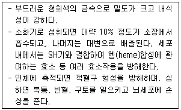
- Cr
- Hg
- Pb
- Al
(정답률: 85%)

2. 국지풍에 관한 설명으로 옳지 않은 것은?
- 일반적으로 낮에 바다에서 육지로 부는 해풍은 밤에 육지에서 바다로 부는 육풍보다 강하다.
- 고도가 높은 산맥에 직각으로 강한 바람이 부는 경우에 산맥의 풍하 쪽으로 건조한 바람이 부는데 이러한 바람을 휀풍이라 한다.
- 곡풍은 경사면→계곡→주계곡으로 수렴하면서 풍속이 가속되기 때문에 일반적으로 낮에 산 위쪽으로 부는 산풍보다 더 강하게 분다.
- 열섬효과로 인하여 도시 중심부가 주위보다 고온이 되어 도시 중심부에서 상승기류가 발생하고 도시 주위의 시골에서 도시로 바람이 부는데 이를 전원풍이라 한다.
(정답률: 73%)
3. 다음에서 설명하는 대기분산모델로 가장 적합한 것은?
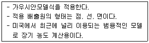
- RAMS
- ISCLT
- UAM
- AUSPLUME
(정답률: 76%)
4. 0℃, 1기압에서 SO2 10ppm은 몇 mg/m3인가?
- 19.62
- 28.57
- 37.33
- 44.14
(정답률: 68%)
5. 굴뚝에서 배출되는 연기의 형태 중 환상형(looping)에 관한 설명으로 옳은 것은?
- 대기가 과단열감률 상태일 때 나타나므로 맑은 날 오후에 발생하기 쉽다.
- 상층이 불안정, 하층이 안정일 경우에 나타나며, 지표 부근의 오염물질 농도가 가장 낮다.
- 전체 대기층이 중립 상태일 때 나타나며, 매연 속의 오염물질 농도는 가우시안 분포를 갖는다.
- 전체 대기층이 매우 안정할 때 나타나며, 상하 확산 폭이 적어 굴뚝의 높이가 낮을 경우 지표 부근에 심각한 오염문제를 야기한다.
(정답률: 61%)
6. 폼알데하이드의 배출과 관련된 업종으로 가장 거리가 먼 것은?
- 피혁제조공업
- 합성수지공업
- 암모니아제조공업
- 포르말린제조공업
(정답률: 71%)
7. 시골에서 먼지농도를 측정하기 위하여 공기를 0.15m/s의 속도로 12시간 동안 여과지에 여과시켰을 때, 사용된 여과지의 빛 전달률이 깨끗한 여과지의 80%로 감소했다. 1000m당 Coh는?
- 0.2
- 0.6
- 1.1
- 1.5
(정답률: 49%)
8. 다음에서 설명하는 오염물질로 가장 적합한 것은?
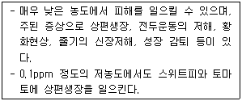
- 오존
- 에틸렌
- 아황산가스
- 불소화합물
(정답률: 58%)
9. 비인의 변위법칙에 관한 식은?
- λ=2897/T(λ:최대에너지가 복사 될 때의 파장, T:흑체의 표면온도)
- E=σT4(E:흑체의 단위표면적에서 복사되는 에너지, σ:상수, T:흑체의 표면온도)
- I=I0exp(-KρL)(I0, I:각각 입사 전후의 빛의 복사속밀도, K:감쇠상수, ρ:매질의 밀도, L:통과거리)
- R=K(1-α)-L(R:순복사, K:지표면에 도달한 일사량, α:지표의 반사율, L:지표로부터 방출되는 장파복사)
(정답률: 72%)
10. 2차 대기오염물질에 해당하는 것은?
- H2S
- H2O2
- NH3
- (CH3)2S
(정답률: 67%)
11. 다음에서 설명하는 오염물질로 가장 적합한 것은?
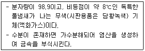
- 페놀
- 석면
- 포스겐
- T.N.T
(정답률: 70%)
12. 불안정한 조건에서 굴뚝의 안지름이 5m, 가스 온도가 173℃, 가스 속도가 10m/s, 기온이 17℃, 풍속이 36km/h일 때, 연기의 상승 높이(m)는? (단, 불안정 조건 시 연기의 상승높이는
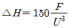
이며, F는 부력을 나타냄)- 34
- 40
- 49
- 56
(정답률: 44%)
13. 다음 중 오존 파괴지수가 가장 큰 것은?
- CCl4
- CHFCl2
- CH2FCl
- C2H2FCl3
(정답률: 60%)
14. Fick의 확산방정식을 실제 대기에 적용시키기 위하여 필요한 가정 조건으로 가장 거리가 먼 것은?
- 바람에 의한 오염물질의 주 이동방향은 x축이다.
- 오염물질은 점배출원으로부터 연속적으로 배출된다.
- 풍향, 풍속, 온도, 시간에 따른 농도변화가 없는 정상상태이다.
- 하류로의 확산은 바람이 부는 방향(x축)의 확산보다 강하다.
(정답률: 69%)
15. 일산화탄소에 관한 설명으로 옳지 않은 것은?
- 대류권 및 성층권에서의 광화학반응에 의하여 대기 중에서 제거된다.
- 물에 잘 녹아 강우의 영향을 크게 받으며, 다른 물질에 강하게 흡착하는 특징을 가진다.
- 토양 박테리아의 활동에 의하여 이산화탄소로 산화되어 대기 중에서 제거된다.
- 발생량과 대기 중의 평균농도로부터 대기 중 평균 체류시간이 약 1~3 개월 정도일 것이라 추정되고 있다.
(정답률: 65%)
16. 역사적인 대기오염 사건에 관한 설명으로 가장 적합하지 않은 것은?
- 로스엔젤레스 사건은 자동차에서 배출되는 질소산화물, 탄화수소 등에 의하여 침강성 역전 조건에서 발생했다.
- 뮤즈계곡 사건은 공장에서 배출되는 아황산가스, 황산, 미세입자 등에 의하여 기온역전, 무풍상태에서 발생했다.
- 런던 사건은 석탄연료의 연소시 배출되는 아황산가스, 먼지 등에 의하여 복사성 역전, 높은 습도, 무풍상태에서 발생했다.
- 보팔 사건은 공장조업사고로 황화수소가 다량누출 되어 발생하였으며 기온역전, 지형상분지 등의 조건으로 많은 인명피해를 유발했다.
(정답률: 73%)
17. 지표면의 오존 농도가 증가하는 원인으로 가장 거리가 먼 것은?
- CO
- NOx
- VOCs
- 태양열 에너지
(정답률: 61%)
18. 세류현상(down wash)이 발생하지 않는 조건은?
- 오염물질의 토출속도가 굴뚝높이에서의 풍속과 같을 때
- 오염물질의 토출속도가 굴뚝높이에서의 풍속의 2.0배 이상일 때
- 굴뚝높이에서의 풍속이 오염물질 토출속도의 1.5배 이상일 때
- 굴뚝높이에서의 풍속이 오염물질 토출속도의 2.0배 이상일 때
(정답률: 65%)
19. 고도에 따른 대기층의 명칭을 순서대로 나열한 것은? (단, 낮은 고도→높은 고도)
- 지표→대류권→성층권→중간권→열권
- 지표→대류권→중간권→성층권→열권
- 지표→성층권→대류권→중간권→열권
- 지표→성층권→중간권→대류권→열권
(정답률: 80%)
20. 다음 오존파괴물질 중 평균수명(년)이 가장 긴 것은?
- CFC-11
- CFC-115
- HCFC-123
- CFC-124
(정답률: 49%)
2과목: 연소공학
21. 옥탄가에 관한 설명이다. ( )안에 들어갈 말로 옳은 것은?
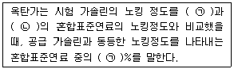
- ㉠ iso-octane, ㉡ n-butane
- ㉠ iso-octane, ㉡ n-heptane
- ㉠ iso-propane, ㉡ n-pentane
- ㉠ iso-pentane, ㉡ n-butane
(정답률: 70%)
22. 다음 회분 성분 중 백색에 가깝고 융점이 높은 것은? (문제 오류로 가답안 발표시 2번이 답안으로 발표되었으나, 확정답안 발표시 2번, 3번이 정답 처리 되었습니다. 여기서는 가답안인 2번을 누르면 정답 처리 됩니다.)
- CaO
- SiO2
- MgO
- Fe2O3
(정답률: 76%)
23. 액화석유가스(LPG)에 관한 설명으로 옳지 않은 것은?
- 천연가스 회수, 나프타 분해, 석유정제 시 부산물로부터 얻어진다.
- 비중은 공기의 1.5~2.0배 정도로 누출 시 인화 폭발의 위험이 크다.
- 액체에서 기체로 될 때 증발열이 있으므로 사용하는 데 유의할 필요가 있다.
- 메탄, 에탄올 주성분으로 하는 혼합물로 1 atm에서 –168℃ 정도로 냉각하면 쉽게 액화된다.
(정답률: 69%)
24. 고체연료의 연소방법 중 유동층 연소에 관한 설명으로 옳지 않은 것은?
- 재나 미연탄소의 배출이 많다.
- 미분탄연소에 비해 연소온도가 높아 NOx 생성을 억제하는데 불리하다.
- 미분탄연소와는 달리 고체연료를 분쇄할 필요가 없고 이에 따른 동력손실이 없다.
- 석회석입자를 유동층매체로 사용할 때, 별도의 배연탈황 설비가 필요하지 않다.
(정답률: 45%)
25. 디젤노킹을 억제할 수 있는 방법으로 옳지 않은 것은?
- 회전속도를 높인다.
- 급기온도를 높인다.
- 기관의 압축비를 크게 하여 압축압력을 높인다.
- 착화지연 기간 및 급격연소 시간의 분사량을 적게 한다.
(정답률: 51%)
26. 회전식 버너에 관한 설명으로 옳지 않은 것은?
- 분무각도가 40~80°로 크고, 유량조절범위도 1:5 정도로 비교적 넓은 편이다.
- 연료유는 0.3~0.5kg/cm2 정도로 가압하여 공급하며, 직결식의 분사유량은 1000L/h이하이다.
- 연료유의 점도가 크고, 분무컵의 회전수가 작을수록 분무상태가 좋아진다.
- 3000~10000rpm으로 회전하는 컵모양의 분무컵에 송입되는 연료유가 원심력으로 비산됨과 동시에 송풍기에서 나오는 1차 공기에 의해 분무되는 형식이다.
(정답률: 52%)
27. 액체연료에 관한 설명으로 옳지 않은 것은?
- 회분이 거의 없으며 연소, 소화, 점화의 조절이 쉽다.
- 화재, 역화의 위험이 크고, 연소 온도가 높기 때문에 국부가열의 위험이 존재한다.
- 기체연료에 비해 밀도가 커 저장에 큰 장소가 필요하지 않고 연료의 수송도 간편한 편이다.
- 완전연소 시 다량의 과잉공기가 필요하므로 연소장치가 대형화되는 단점이 있으며, 소화가 용이하지 않다.
(정답률: 54%)
28. 폭굉 유도 거리(DID)가 짧아지는 요건으로 가장 거리가 먼 것은?
- 압력이 높다.
- 점화원의 에너지가 강하다.
- 정상의 연소속도가 작은 단일가스이다.
- 관속에 방해물이 있거나 관내경이 작다.
(정답률: 56%)
29. 석탄의 탄화도가 증가할수록 나타나는 성질로 옳지 않은 것은?
- 착화온도가 높아진다.
- 연소속도가 느려진다.
- 수분이 감소하고 발열량이 증가한다.
- 연료비(고정탄소(%)/휘발분(%))가 감소한다.
(정답률: 68%)
30. 당량비(ø)에 관한 설명으로 옳지 않은 것은?
- ø＞1 경우는 불완전연소가 된다.
- ø＞1 경우는 연료가 과잉인 경우이다.
- ø＜1 경우는 공기가 부족한 경우이다.
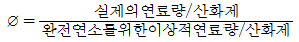
이다.
(정답률: 63%)
31. 고위발열량이 12000kcal/kg인 연료 1kg의 성분을 분석한 결과 탄소가 87.7%, 수소가 12%, 수분이 0.3%이었다. 이 연료의 저위발열량(kcal/kg)은?
- 10350
- 10820
- 11020
- 11350
(정답률: 59%)
32. 분무화 연소방식에 해당하지 않는 것은?
- 유압 분무화식
- 충돌 분무화식
- 여과 분무화식
- 이류체 분무화식
(정답률: 45%)
33. 기체연료의 연소방법 중 예혼합연소에 관한 설명으로 옳지 않은 것은?
- 화염길이가 길고 그을음이 발생하기 쉽다.
- 역화의 위험이 있어 역화방지기를 부착해야 한다.
- 화염온도가 높아 연소부하가 큰 곳에 사용가능하다.
- 연소기 내부에서 연료와 공기의 혼합비가 변하지 않고 균일하게 연소된다.
(정답률: 64%)
34. 연소에 관한 설명으로 옳지 않은 것은?
- 표면연소는 휘발분 함유율이 적은 물질의 표면 탄소분부터 직접 연소되는 형태이다.
- 다단연소는 공기 중의 산소 공급 없이 물질 자체가 함유하고 있는 산소를 사용하여 연소하는 형태이다.
- 증발연소는 비교적 융점이 낮은 고체연료가 연소하기 전에 액상으로 융해한 후 증발하여 연소하는 형태이다.
- 분해연소는 분해온도가 증발온도보다 낮은 고체연료가 기상 중에 화염을 동반하여 연소할 경우 관찰되는 연소 형태이다.
(정답률: 62%)
35. S함량이 5%인 B-C유 400kL를 사용하는 보일러에 S함량이 1%인 B-C유를 50% 섞어서 사용하면 SO2의 배출량은 몇 % 감소하는가? (단, 기타 연소조건은 동일하며, S는 연소시전량 SO2로 변환되고, S함량에 무관하게 B-C유의 비중은 0.95임)
- 30%
- 35%
- 40%
- 45%
(정답률: 54%)
36. C 85%, H 11%, S 2%, 회분 2%의 무게비로 구성된 B-C유 1kg을 공기비 1.3으로 완전연소시킬 때, 건조 배출가스 중의 먼지 농도(g/Sm3)는? (단, 모든 회분 성분은 먼지가 됨)
- 0.82
- 1.53
- 5.77
- 10.23
(정답률: 44%)
37. 표준상태에서 CO2 50kg의 부피(m3)는? (단, CO2는 이상기체라 가정)
- 12.73
- 22.40
- 25.45
- 44.80
(정답률: 61%)
38. 고체연료의 화격자 연소장치 중 연료가 화격자→석탄층→건류층→산화층→환원층을 거치며 연소되는 것으로, 연료층을 항상 균일하게 제어할 수 있고 저품질 연료도 유효하게 연소시킬 수 있어 쓰레기 소각로에 많이 이용되는 장치로 가장 적합한 것은?
- 체인 스토커(chain stoker)
- 포트식 스토커(pot stoker)
- 산포식 스토커(spreader stoker)
- 플라스마 스토커(plasma stoker)
(정답률: 71%)
39. 어떤 액체연료의 연소 배출가스 성분을 분석한 결과 CO2가 12.6%, O2가 6.4%일 때, (CO2)max(%)는? (단, 연료는 완전연소 됨)
- 11.5
- 13.2
- 15.3
- 18.1
(정답률: 52%)
40. 다음 중 황함량이 가장 낮은 연료는?
- LPG
- 중유
- 경유
- 휘발유
(정답률: 70%)
3과목: 대기오염 방지기술
41. 유체의 점성에 관한 설명으로 옳지 않은 것은?
- 액체의 온도가 높아질수록 점성계수는 감소한다.
- 점성계수는 압력과 습도의 영향을 거의 받지 않는다.
- 유체 내에 발생하는 전단응력은 유체의 속도구배에 반비례한다.
- 점성은 유체분자 상호간에 작용하는 응집력과 인접 유체층간의 운동량 교환에 기인한다.
(정답률: 51%)
42. 송풍기 회전수(N)와 유체밀도(ρ)가 일정할 때 성립하는 송풍기 상사법칙을 나타내는 식은? (단, Q : 유량, P : 풍압, L : 동력, D : 송풍기의 크기)
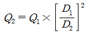
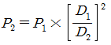
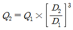
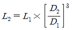
(정답률: 52%)
43. 싸이클론(cyclone)의 운전조건과 치수가 집진율에 미치는 영향으로 옳지 않은 것은?
- 동일한 유량일 때 원통의 직경이 클수록 집진율이 증가한다.
- 입구의 직경이 작을수록 처리가스의 유입속도가 빨라져 집진율과 압력손실이 증가한다.
- 함진가스의 온도가 높아지면 가스의 점도가 커져 집진율이 감소하나 그 영향은 크지 않은 편이다.
- 출구의 직경이 작을수록 집진율이 증가하지만 동시에 압력손실이 증가하고 함진가스의 처리능력이 감소한다.
(정답률: 48%)
44. 싸이클론(cyclone)의 가스 유입속도를 4배로 증가시키고 유입구의 폭을 3배로 늘렸을 때, 처음 Lapple의 절단입경 dp에 대한 나중 Lapple의 절단입경 dp’의 비는?
- 0.87
- 0.93
- 1.18
- 1.26
(정답률: 42%)
45. 임의로 충진한 충진탑에서 혼합물을 물리적으로 분리할 때, 액의 분배가 원활하게 이루어지지 못하면 어떤 현상이 발생할 수 있는가?
- mixing 현상
- flooding 현상
- blinding 현상
- channeling 현상
(정답률: 52%)
46. 입경측정방법 중 관성충돌법(cascade impactor)에 관한 설명으로 옳지 않은 것은?
- 입자의 질량크기분포를 알 수 있다.
- 되튐으로 인한 시료의 손실이 일어날 수 있다.
- 관성충돌을 이용하여 입경을 간접적으로 측정하는 방법이다.
- 시료채취가 용이하고 채취 준비에 많은 시간이 소요되지 않는 장점이 있으나, 단수를 임의로 설계하기가 어렵다.
(정답률: 68%)
47. 다음 여과포의 재질 중 최고사용온도가 가장 높은 것은?
- 오론
- 목면
- 비닐론
- 나일론(폴리아미드계)
(정답률: 45%)
48. 유해가스를 처리할 때 사용하는 충전탑(packed tower)에 관한 내용으로 옳지 않은 것은?
- 충전탑에서 hold-up은 탑의 단위면적당 충전재의 양을 의미한다.
- 흡수액에 고형물이 함유되어 있는 경우에는 침전물이 생기는 방해를 받는다.
- 충전물을 불규칙적으로 충전했을 때 접촉면적과 압력손실이 커진다.
- 일정양의 흡수액을 흘릴 때 유해가스의 압력손실은 가스속도의 대수 값에 비례하며, 가스속도가 증가할 때 나타나는 첫번째 파괴점(break point)을 loading point라 한다.
(정답률: 60%)
49. 하전식 전기집진장치에 관한 설명으로 옳지 않은 것은?
- 2단식은 1단식에 비해 오존의 생성이 적다.
- 1단식은 일반적으로 산업용에 많이 사용된다.
- 2단식은 비교적 함진 농도가 낮은 가스처리에 유용하다.
- 1단식은 역전리 억제에는 효과적이나 재비산 방지는 곤란하다.
(정답률: 58%)
50. 싸이클론(cyclone)을 사용하여 입자상 물질을 집진할 때, 입경에 따라 집진효율이 달라진다. 집진효율이 50%인 입경을 나타내는 용어는?
- stokes diameter
- critical diameter
- cut size diameter
- aerodynamic diameter
(정답률: 74%)
51. 일정한 온도 하에서 어떤 유해가스와 물이 평형을 이루고 있다. 가스 분압이 38mmHg이고 Henry상수가 0.01atm·m3/kg·mol일 때, 액 중 유해가스 농도(kg·mol/m3)는?
- 3.8
- 4.0
- 5.0
- 5.8
(정답률: 50%)
52. 광학현미경을 사용하여 분진의 입경을 측정할 수 있다. 이 때 입자의 투영면적을 2 등분하는 선의 거리로 나타낸 분진의 입경은?
- Feret경
- Martin경
- 등면적경
- Heyhood경
(정답률: 70%)
53. 촉매산화식 탈취공정에 관한 설명으로 옳지 않은 것은?
- 대부분의 성분은 탄산가스와 수증기가 되기 때문에 배수처리가 필요 없다.
- 비교적 고온에서 처리하기 때문에 직접연소식에 비해 질소산화물의 발생량이 많다.
- 광범위한 가스 조건 하에서 적용이 가능하며 저농도에서도 뛰어난 탈취효과를 발휘할 수 있다.
- 처리하고자 하는 대상가스 중의 악취성분 농도나 발생상황에 대응하여 최적의 촉매를 선정함으로서 뛰어난 탈취효과를 확보할 수 있다.
(정답률: 58%)
54. 유량이 5000m3/h인 가스를 충전탑을 사용하여 처리하고자 한다. 충전탑 내의 가스 유속을 0.34m/s로 할 때, 충전탑의 직경(m)은?
- 1.9
- 2.3
- 2.8
- 3.5
(정답률: 51%)
55. 시멘트산업에서 일반적으로 사용하는 전기집진장치의 배출가스 조절제는?
- 물(수증기)
- SO3 가스
- 암모늄염
- 가성소다
(정답률: 55%)
56. 가연성 유해가스를 제거하기 위한 방법 중 촉매산화법에 관한 설명으로 옳지 않은 것은?
- 압력손실이 커서 운영 비용이 많이 든다.
- 체류시간은 연소 장치에서 요구되는 것보다 짧다.
- 촉매로는 백금, 팔라듐 등의 귀금속이 활성이 크기 때문에 널리 사용된다.
- 촉매들은 운전시 상한온도가 있기 때문에 촉매층을 통과할 때 온도가 과도하게 올라가지 않도록 한다.
(정답률: 50%)
57. 직경이 1.2m인 직선덕트를 사용하여 가스를 15m/s의 속도로 수송할 때, 길이 100m당 압력손실(mmHg)은? (단, 덕트의 마찰계수 = 0.0⑤, 가스의 밀도 = 1.3kg/m3)(문제 오류로 가답안 발표시 1번이 답안으로 발표되었으나, 확정답안 발표시 전항 정답 처리 되었습니다. 여기서는 가답안인 1번을 누르면 정답 처리 됩니다.)
- 19.1
- 21.8
- 24.9
- 29.8
(정답률: 53%)
58. 20℃, 1기압에서 공기의 동점성계수는 1.5×10-5m2/s이다. 관의 지름이 50mm일 때, 그 관을 흐르는 공기의 속도(m/s)는? (단, 레이놀즈 수 = 3.5×104)
- 4.0
- 6.5
- 9.0
- 10.5
(정답률: 49%)
59. 탈취방법 중 수세법에 관한 설명으로 옳지 않은 것은?
- 고농도의 악취가스 전처리에 효과적이다.
- 조작이 간단하며 탈취효율이 우수하여 전처리과정 없이 사용된다.
- 수온에 따라 탈취효과가 달라지고 압력손실이 큰 것이 단점이다.
- 알데히드류, 저급유기산류, 페놀 등 친수성 극성기를 가지는 성분을 제거할 수 있다.
(정답률: 45%)
60. 가스분산형 흡수장치로만 짝지어진 것은?
- 단탑, 기포탑
- 기포탑, 충전탑
- 분무탑, 단탑
- 분무탑, 충전탑
(정답률: 65%)
4과목: 대기오염 공정시험기준(방법)
61. 이온크로마토그래피의 검출기에 관한 설명이다. ( )안에 들어갈 내용으로 가장 적합한 것은?
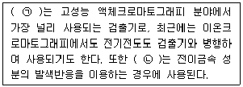
- ㉠ 광학검출기, ㉡ 암페로메트릭검출기
- ㉠ 전기화학적검출기, ㉡ 염광광도검출기
- ㉠ 자외선흡수검출기, ㉡ 가시선흡수검출기
- ㉠ 전기전도도검출기, ㉡ 전기화학적검출기
(정답률: 58%)
62. 굴뚝 배출가스 중의 황산화물을 분석하는데 사용하는 시료흡수용 흡수액은?
- 질산용액
- 붕산용액
- 과산화수소수
- 수산화나트륨용액
(정답률: 45%)
63. 자외선/가시선분광법에 관한 설명으로 옳지 않은 것은? (단, Io: 입사광의 강도, It: 투사광의 강도)
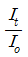
를 투과도(t)라 한다.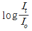
을 흡광도(A)라 한다.- 투과도(t)를 백분율로 표시한 것을 투과 퍼센트라 한다.
- 자외선/가시선분광법은 램버어트-비어 법칙을 응용한 것이다.
(정답률: 58%)
64. 오염물질A의 실측 농도가 250mg/Sm3이고, 그 때의 실측 산소농도가 3.5%이다. 오염물질A의 보정농도(mg/Sm3)는? (단, 오염물질A는 표준산소농도를 적용받으며, 표준산소농도는 4%임)
- 219
- 243
- 247
- 286
(정답률: 56%)
65. 비분산적외선 분석계의 구성에서 ( )안에 들어갈 기기로 옳은 것은? (단, 복광속 분석계 기준)
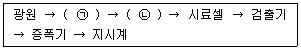
- ㉠ 광학섹터, ㉡ 회전필터
- ㉠ 회전섹터, ㉡ 광학필터
- ㉠ 광학필터, ㉡ 회전필터
- ㉠ 회전섹터, ㉡ 광학섹터
(정답률: 63%)
66. 배출가스 중의 건조시료가스 채취량을 건식가스미터를 사용하여 측정할 때 필요한 항목에 해당하지 않는 것은?
- 가스미터의 온도
- 가스미터의 게이지압
- 가스미터로 측정한 흡입가스량
- 가스미터 온도에서의 포화 수증기압
(정답률: 65%)
67. 대기 중의 가스상 물질을 용매채취법에 따라 채취할 때 사용하는 순간유량계 중 면적식 유량계는?
- 노즐식 유량계
- 오리피스 유량계
- 게이트식 유량계
- 미스트식 가스미터
(정답률: 59%)
68. 굴뚝을 통해 대기 중으로 배출되는 가스상의 시료를 채취할 때 사용하는 도관에 관한 설명으로 옳지 않은 것은?
- 도관의 안지름은 도관의 길이, 흡인가스의 유량, 응축수에 의한 막힘, 또는 흡인펌프의 능력 등을 고려해서 4~25mm로 한다.
- 하나의 도관으로 여러 개의 측정기를 사용할 경우 각 측정기 앞에서 도관을 병렬로 연결하여 사용한다.
- 도관의 길이는 가능한 한 먼 곳의 시료 채취구에서도 채취가 용이하도록 100m 정도로 가급적 길게 하되, 200m를 넘지 않도록 한다.
- 도관은 가능한 한 수직으로 연결해야 하고 부득이 구부러진 관을 사용할 경우에는 응축수가 흘러나오기 쉽도록 경사지게 (5°이상) 한다.
(정답률: 47%)
69. 굴뚝 배출가스 중의 염화수소를 분석하는 방법 중 자외선/가시선 분광법(흡광광도법)에 해당하는 것은?
- 질산은법
- 4-아미노안티피린법
- 싸이오시안산제이수은법
- 란탄-알리자린 콤플렉숀법
(정답률: 53%)
70. 굴뚝 배출가스 중의 질소산화물을 연속자동측정 할 때 사용하는 화학발광 분석계의 구성에 관한 설명으로 옳지 않은 것은?
- 반응조는 시료가스와 오존가스를 도입하여 반응시키기 위한 용기로서 내부압력조건에 따라 감압형과 상압형으로 구분된다.
- 오존발생기는 산소가스를 오존으로 변환시키는 역할을 하며, 에너지원으로서 무성방전관 또는 자외선발생기를 사용한다.
- 검출기에는 화학발광을 선택적으로 투과시킬 수 있는 발광필터가 부착되어 있어 전기신호를 발광도로 변환시키는 역할을 한다.
- 유량제어부는 시료가스 유량제어부와 오존가스 유량제어부가 있으며 이들은 가각 저항관, 압력조절기, 니들밸브, 면적유량계, 압력계 등으로 구성되어 있다.
(정답률: 56%)
71. 굴뚝 배출가스 중의 질소산화물을 아연환원 나프틸에틸렌다이아민법에 따라 분석할 때에 관한 설명이다. ( )안에 들어갈 내용으로 옳은 것은?
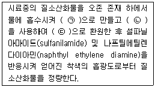
- ㉠ 아질산이온, ㉡ 분말금속아연, ㉢ 질산이온
- ㉠ 아질산이온, ㉡ 분말황산아연, ㉢ 질산이온
- ㉠ 질산이온, ㉡ 분말황산아연, ㉢ 아질산이온
- ㉠ 질산이온, ㉡ 분말금속아연, ㉢ 아질산이온
(정답률: 56%)
72. 대기오염공정시험기준 총칙 상의 시험 기재 및 용어에 관한 내용으로 옳지 않은 것은?
- 시험조작 중 “즉시”란 30초이내에 표시된 조작을 하는 것을 뜻한다.
- “감압 또는 진공”이라 함은 따로 규정이 없는 한 50mmHg이하를 뜻한다.
- 용액의 액성표시는 따로 규정이 없는 한 유리전극법에 의한 pH미터로 측정한 것을 뜻한다.
- 액체성분의 양을 “정확히 취한다”는 흘피펫, 눈금플라스크 또는 이와 동등 이상의 정도를 갖는 용량계를 사용하여 조작하는 것을 뜻한다.
(정답률: 67%)
73. 대기오염공정시험기준 총칙 상의 용어 정의로 옳지 않은 것은?
- 냉수는 4℃이하, 온수는 60~70℃, 열수는 약 100℃를 말한다.
- 시험에 사용하는 시약은 따로 규정이 없는 한 특급 또는 1급이상 또는 이와 동등한 규격의 것을 사용하여야 한다.
- 기체 중의 농도를 mg/m3로 나타냈을 때 m3은 표준상태의 기체 용적을 뜻하는 것으로 Sm3로 나타냈을 때 m3은 표준상태의 기체 용적을 뜻하는 것으로 Sm3로 표시한 것과 같다.
- ppm의 기호는 따로 표시가 없는 한 기체일 때는 용량 대 용량(V/V), 액체일 때는 중량 대 중량(W/W)으로 표시한 것을 뜻한다.
(정답률: 64%)
74. 대기 중의 유해 휘발성 유기화합물을 고체흡착법에 따라 분석할 때 사용하는 용어의 정의이다. ( )안에 들어갈 내용으로 가장 적합한 것은?
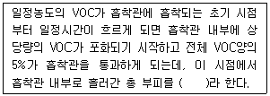
- 머무름부피(retention volume)
- 안전부피(safe sample volume)
- 파과부피(breakthrough volume)
- 탈착부피(desorption volume)
(정답률: 63%)
75. 굴뚝 배출가스 중의 일산화탄소를 분석하는 방법에 해당하지 않는 것은?
- 정전위전해법
- 자외선가시선분광법
- 비분산형적외선분석법
- 기체크로마토그래피법
(정답률: 50%)
76. 굴뚝 배출가스 중의 무기 불소화합물을 자외선/가시선분광법에 따라 분석하여 얻은 결과이다. 불소화합물의 농도(ppm)는? (단, 방해이온이 존재할 경우임)(관련 규정 개정전 문제로 여기서는 기존 정답인 4번을 누르면 정답 처리됩니다. 자세한 내용은 해설을 참고하세요.)
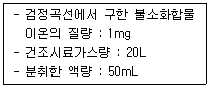
- 100
- 155
- 250
- 295
(정답률: 36%)
77. 원자흡수분광법에 따라 분석하여 얻은 측정결과이다. 대기 중의 납 농도(mg/m3)는?
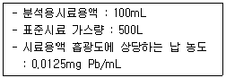
- 2.5
- 5.0
- 7.5
- 9.5
(정답률: 39%)
78. 대기 중의 다환방향족 탄화수소(PAH)를 기체크로마토그래피법에 따라 분석하고자 한다. 다음 중 체류시간(retention time)이 가장 긴 것은?
- 플루오렌(fluorene)
- 나프탈렌(naphthalene)
- 안트라센(anthracene)
- 벤조(a)피렌(benzo(a)pyrene)
(정답률: 61%)
79. 굴뚝 배출가스 중의 일산화탄소를 기체크로마토그래피법에 따라 분석할 때에 관한 설명으로 옳지 않은 것은?
- 부피분율 99.9%이상의 헬륨을 운반가스로 사용한다.
- 활성알루미나(Al2O3 93.1%, SiO2 0.02%)를 충전제로 사용한다.
- 메테인화 반응장치가 있는 불꽃이온화 검출기를 사용한다.
- 내면을 잘 세척한 안지름이 2~4mm, 길이가 0.5~1.5m인 스테인리스강 재질관을 분리관으로 사용한다.
(정답률: 44%)
80. 이온크로마토그래피의 설치조건(기준)으로 옳지 않은 것은?
- 대형변압기, 고주파가열 등으로부터 전자유도를 받지 않아야 한다.
- 부식성 가스 및 먼지발생이 적고, 진동이 없으며 직사광선을 피해야 한다.
- 실온 10~25℃, 상대습도 30~85% 범위로 급격한 온도 변화가 없어야 한다.
- 공급전원은 기기의 사양에 지정된 전압 전기용량 및 주파수로 전압변동은 40% 이하이고, 급격한 주파수 변동이 없어야 한다.
(정답률: 61%)
5과목: 대기환경관계법규
81. 대기환경보전법령상 환경기술인 등의 교육을 받게 하지 아니한 자에 대한 행정 처분기준으로 옳은 것은?
- 50만원 이하의 과태료를 부과한다.
- 100만원 이하의 과태료를 부과한다.
- 100만원 이하의 벌금에 처한다.
- 200만원 이하의 벌금에 처한다.
(정답률: 55%)
82. 대기환경보전법령상 수도권대기환경청장, 국립환경과학원장 또는 한국환경공단이 설치하는 대기오염 측정망의 종류가 아닌 것은?
- 도시지역의 휘발성유기화합물 등의 농도를 측정하기 위한 광화학대기오염물질측정망
- 기후·생태계변화 유발물질의 농도를 측정하기 위한 지구대기측정망
- 대기 중의 중금속 농도를 측정하기 위한 대기중금속측정망
- 대기오염물질의 지역배경농도를 측정하기 위한 교외대기측정망
(정답률: 66%)
83. 대기환경보전법령상 개선명령의 이행보고와 관련하여 환경부령으로 정하는 대기오염도 검사기관에 해당하지 않는 것은?
- 보건환경연구원
- 유역환경청
- 한국환경공단
- 환경보전협회
(정답률: 69%)
84. 대기환경관계법령상 비산먼지 발생을 억제하기 위한 시설의 설치 및 필요한 조치에 관한 기준 중 시멘트 수송공정에서 적재물은 적재함 상단으로부터 수평으로 몇 cm 이하까지 적재하여야 하는가?
- 5cm 이하
- 10cm 이하
- 20cm 이하
- 30cm 이하
(정답률: 47%)
85. 대기환경보전법령상 분체상 물질을 싣고 내리는 공정의 경우, 비산먼지 발생을 억제하기 위해 작업을 중지해야 하는 평균풍속(m/s)의 기준은?
- 2 이상
- 5 이상
- 7 이상
- 8 이상
(정답률: 55%)
86. 대기환경보전법령상 장거리이동대기오염물질대책위원회의 위원에는 대통령령으로 정하는 분야의 학식과 경험이 풍부한 전문가를 위촉할 수 있다. 여기서 나타내는 ‘대통령령으로 정하는 분야’와 가장 거리가 먼 것은?
- 예방의학 분야
- 유해화학물질 분야
- 국제협력 분야 및 언론 분야
- 해양 분야
(정답률: 45%)
87. 대기환경보전법령상 대기오염경보에 관한 설명으로 틀린 것은?
- 시·도지사는 당해 지역에 대하여 대기오염경보를 발령할 수 있다.
- 지역의 대기오염 발생 특성 등을 고려하여 특별시, 광역시 등의 조례로 경보 단계별 조치사항을 일부 조정할 수 있다.
- 대기오염경보의 대상 지역, 대상 오염물질, 발령 기준, 경보 단계 및 경보 단계별 조치 등에 필요한 사항은 환경부령으로 정한다.
- 경보단계 중 경보발령의 경우에는 주민의 실외활동 제한 요청, 자동차 사용의 제한 및 사업장의 연료사용량 감축 권고 등의 조치를 취하여야 한다.
(정답률: 44%)
88. 대기환경보전법령상 기후·생태계 변화 유발물질 중 “환경부령으로 정하는 것”에 해당하는 것은?
- 염화불화탄소와 수소염화불화탄소
- 염화불화산소와 수소염화불화산소
- 불화염화수소와 불화염소화수소
- 불화염화수소와 불화수소화탄소
(정답률: 54%)
89. 대기환경보전법령상 장거리이동대기오염물질 대책위원회에 관한 사항으로 틀린 것은?
- 위원회는 위원장 1명을 포함한 25명 이내의 위원으로 구성한다.
- 위원회의 위원장은 환경부장관이 되고, 위원은 환경부령으로 정하는 중앙행정기관의 공무원 등으로서 환경부장관이 위촉하거나 임명하는 자로한다.
- 위원회와 실문원회 및 장거리이동대기 오염물질 연구단의 구성 및 운영 등에 관하여 필요한 사항은 대통령령으로 정한다.
- 환경부장관은 장거리이동대기오염물질 피해방지를 위하여 5년마다 관계 중앙행정기관의 장과 협의하고 시·도지사의 의견을 들어야 한다.
(정답률: 58%)
90. 실내공기질 관리법령상 신축 공동주택의 실내공기질 권고기준 중 “에틸벤젠”기준으로 옳은 것은?
- 210μg/m3이하
- 300μg/m3이하
- 360μg/m3이하
- 700μg/m3이하
(정답률: 65%)
91. 대기환경보전법령상 환경부장관은 오염물질 측정기기의 운영·관리기준을 지키지 않는 사업자에 대해 조치명령을 하는 경우, 부득이한 사유인 경우 신청에 의한 연장기간까지 포함하여 최대 몇 개월의 범위에서 개선기간을 정할 수 있는가?
- 3개월
- 6개월
- 9개월
- 12개월
(정답률: 44%)
92. 대기환경보전법령상 그 배출시설이 발전소의 발전 설비로서 국민경제에 현저한 지장을 줄 우려가 있어 조업정치처분을 갈음하여 과징금을 부과할 때, 3종사업장인 경우 초엽정지 1일당 과징금 부과금액 기준으로 옳은 것은?
- 900만원
- 600만원
- 450만원
- 300만원
(정답률: 56%)
93. 대기환경보전법령상 위임업무 보고사항 중 “자동차 연료 및 첨가제의 제조·판매 또는 사용에 대한 규제현황” 업무의 보고횟수 기준은?
- 연 1회
- 연 2회
- 연 4회
- 수시
(정답률: 65%)
94. 대기환경보전법령상 비산먼지 발생사업으로서 “대통령령으로 정하는 사업”중 환경부령으로 정하는 사업과 가장 거리가 먼 것은?
- 비금속물질의 채취업, 제조업 및 가공업
- 제1차 금속 제조업
- 운송장비 제조업
- 목재 및 광석의 운송업
(정답률: 51%)
95. 환경정책기본법령상 대기 환경기준에 해당되지 않은 항목은?
- 탄화수소(HC)
- 아황산가스(SO2)
- 일산화탄소(CO)
- 이산화질소(NO2)
(정답률: 50%)
96. 실내공기질 관리법령상 “의료기관”의 라돈(Bq/m3)항목 실내공기질 권고기준은?
- 148 이하
- 400이하
- 500이하
- 1000이하
(정답률: 69%)
97. 대기환경보전법령상 배출시설 설치신고를 하고자 하는 경우 배출시설 설치신고서에 포함되어야 하는 사항과 가장 거리가 먼 것은?
- 배출시설 및 방지시설의 설치명세서
- 방지시설의 일반도
- 방지시설의 연간 유지관리 계획서
- 유해오염물질 확정 배출농도 내역서
(정답률: 49%)
98. 환경정책기본법령상 오존(O3)의 환경기준 중 8시간 평균치 기준(㉠)과 1시간평균치 기준(㉡)으로 옳은 것은?
- ㉠ 0.06ppm이하, ㉡ 0.03ppm이하
- ㉠ 0.06ppm이하, ㉡ 0.1ppm이하
- ㉠ 0.03ppm이하, ㉡ 0.03ppm이하
- ㉠ 0.003ppm이하, ㉡ 0.1ppm이하
(정답률: 55%)
99. 대기환경보전법령상 운행차배출허용기준을 초과하여 개선명령을 받은 자동차에 대한 운행정지표이 색상기준으로 옳은 것은?
- 바탕색은 노란색, 문자는 검정색
- 바탕색은 흰색, 문자는 검정색
- 바탕색은 초록색, 문자는 흰색
- 바탕색은 노란색, 문자는 흰색
(정답률: 68%)
100. 실내공기질 관리법령상 이 법의 적용대상이 되는 시설 중 “대통령령이 정하는 규모의 것”에 해당하지 않는 것은?
- 여객자동차터미널의 연면적 1천 5백제곱미터 이상인 대합실
- 공항시설 중 연면적 1천 5백제곱미터 이상인 여객터미널
- 연면적 430제곱미터 이상인 어린이집
- 연면적 2천제곱미터 이상이거나 평상수 100개 이상인 의료기관
(정답률: 41%)